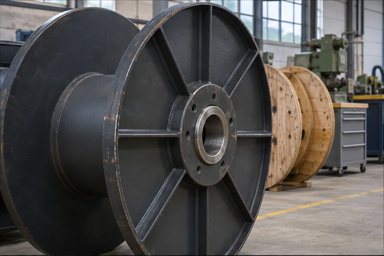
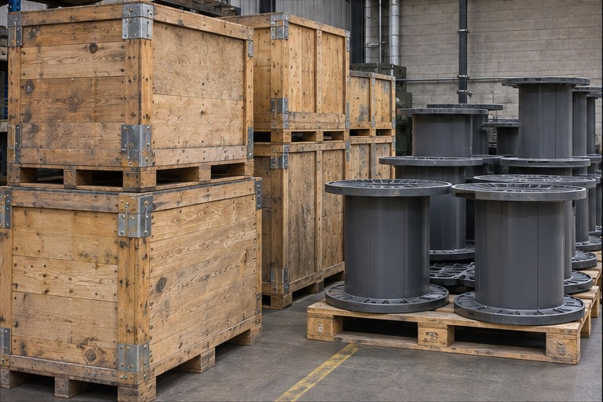
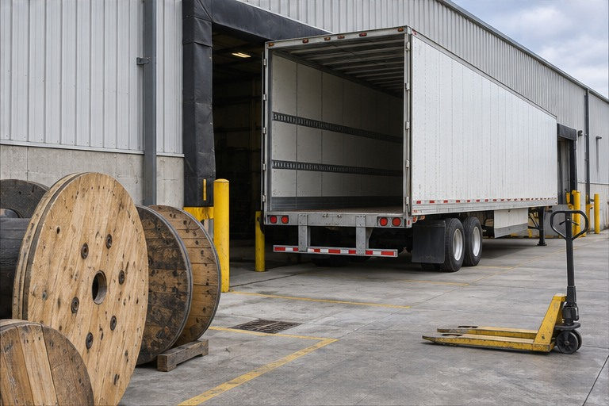

Packaging services
Refurbishing and return transportation for wire spools and other reusable industrial packaging.

Spool refurbishing
A damaged spool can often be rebuilt. We inspect the components, replace worn parts and check the finished spool against industry standards. After inspection, we label and palletize the spools for return.
Contact us
Specialized packaging
An automotive parts manufacturer and a company shipping playground equipment have different packaging needs. We work from the packaging you use and the condition in which it comes back. The work can include building or repairing containers, cleaning, custom inspections, labelling and palletizing.
Contact us
Transportation
We coordinate collection and redistribution alongside the refurbishing work. Where it suits the operation, a trailer can stay at your facility to collect used packaging until it is ready to move.
Contact us